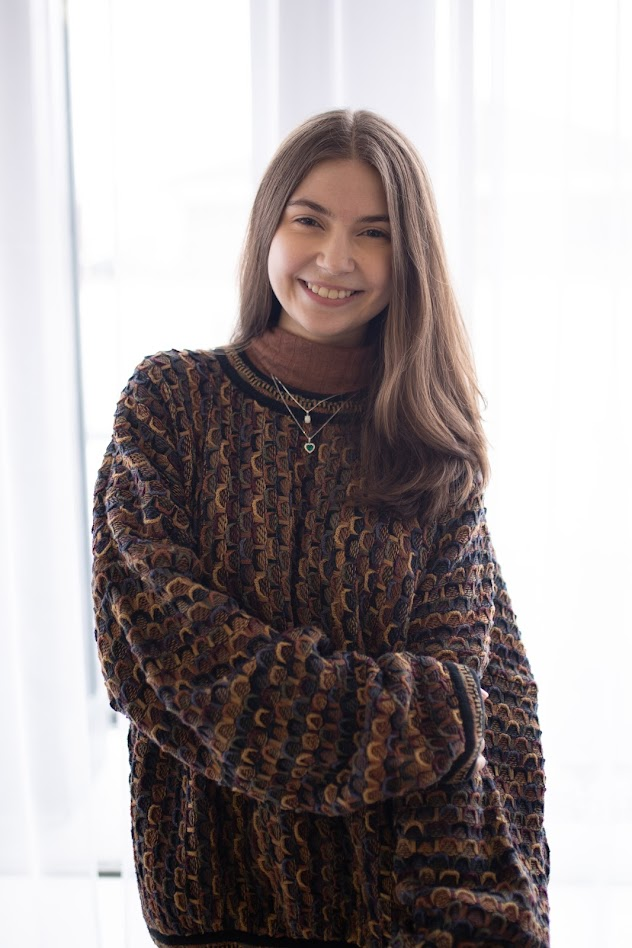

About Me
My name is Adelynn, and I grew up in Texas. I am focused on knit design, digital knit programming, and hand flat machines. I love creating texture and design through various gauge knits.
I am a collaborative team player experienced in both customer service and workroom management. I am a skilled multitasker, eager to learn new proficiencies, punctual, and a self-motivated employee who completes tasks efficiently without supervision.